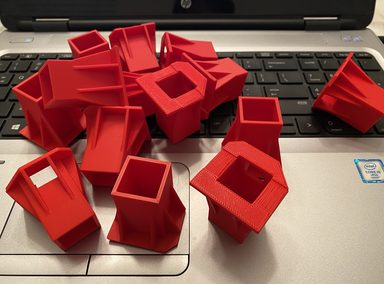
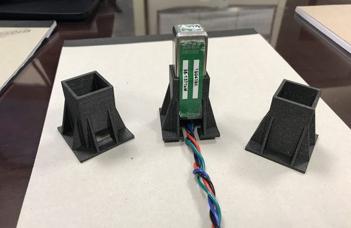
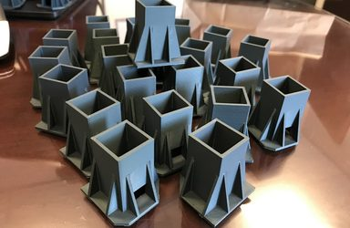

01
Go-Switch Sleeve



A go-switch is a sensor used across many environments; here it warned engineers of pipeline failures. In the harsh conditions where they were mounted, the sensors threw false warnings — wasting time and forcing plant shutdowns.
Working from technical drawings provided by the engineers, I designed and produced these protective sleeves. Their implementation drastically improved the stability of the sensors and, more importantly, increased plant up-time.